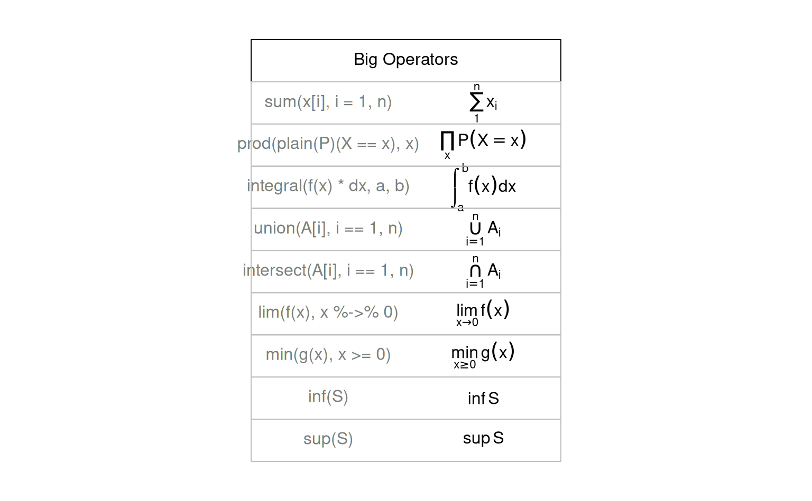

The fifth demo from demo(plotmath).
make.table <- function(nr, nc) {
savepar <- par(mar=rep(0, 4), pty="s")
plot(c(0, nc*2 + 1), c(0, -(nr + 1)),
type="n", xlab="", ylab="", axes=FALSE)
savepar
}
get.r <- function(i, nr) {
i %% nr + 1
}
get.c <- function(i, nr) {
i %/% nr + 1
}
draw.title.cell <- function(title, i, nr) {
r <- get.r(i, nr)
c <- get.c(i, nr)
text(2*c - .5, -r, title)
rect((2*(c - 1) + .5), -(r - .5), (2*c + .5), -(r + .5))
}
draw.plotmath.cell <- function(expr, i, nr, string = NULL) {
r <- get.r(i, nr)
c <- get.c(i, nr)
if (is.null(string)) {
string <- deparse(expr)
string <- substr(string, 12, nchar(string) - 1)
}
text((2*(c - 1) + 1), -r, string, col="grey50")
text((2*c), -r, expr, adj=c(.5,.5))
rect((2*(c - 1) + .5), -(r - .5), (2*c + .5), -(r + .5), border="grey")
}
# Need fewer, taller rows and fewer, wider columns for big operators ...
nr <- 10
nc <- 1
make.table(nr, nc)
#> $mar
#> [1] 5.1 4.1 4.1 2.1
#>
#> $pty
#> [1] "m"
i <- 0
draw.title.cell("Big Operators", i, nr); i <- i + 1
draw.plotmath.cell(expression(sum(x[i], i=1, n)), i, nr); i <- i + 1
draw.plotmath.cell(expression(prod(plain(P)(X == x), x)), i, nr); i <- i + 1
draw.plotmath.cell(expression(integral(f(x) * dx, a, b)), i, nr); i <- i + 1
draw.plotmath.cell(expression(union(A[i], i==1, n)), i, nr); i <- i + 1
draw.plotmath.cell(expression(intersect(A[i], i==1, n)), i, nr); i <- i + 1
draw.plotmath.cell(expression(lim(f(x), x %->% 0)), i, nr); i <- i + 1
draw.plotmath.cell(expression(min(g(x), x >= 0)), i, nr); i <- i + 1
draw.plotmath.cell(expression(inf(S)), i, nr); i <- i + 1
draw.plotmath.cell(expression(sup(S)), i, nr); i <- i + 1
Another example plot.
par(mar = c(5, 5, 5, 5), cex.lab = 1.3)
plot(1:10, xlab = expression(hat(beta)), ylab = expression(hat(beta)))Another example plot, specifying dev png.
par(mar = c(5, 5, 5, 5), cex.lab = 1.3)
plot(1:10, xlab = expression(hat(beta)), ylab = expression(hat(beta)))
Another example plot, specifying dev CairoPNG.
par(mar = c(5, 5, 5, 5), cex.lab = 1.3)
plot(1:10, xlab = expression(hat(beta)), ylab = expression(hat(beta)))